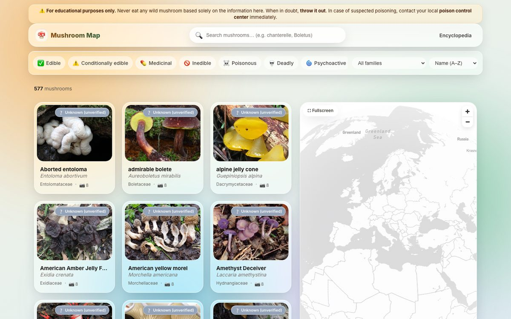

Mapbox GL

Mushroom Map
An interactive mushroom encyclopedia — 577 species with photos, taxonomy and edibility, plus a global occurrence map of 30k+ records. Client-side clustering, live search, filters and per-species detail pages. Fully static.
View demo →